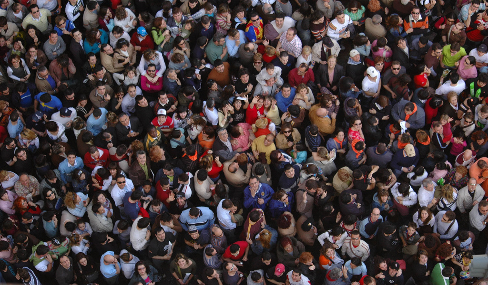

PyBossa an open-source volunteer thinking framework
PyBossa is an open-source framework that allows professional and amateur scientists to run web applications (that can be deployed in Crowdcrafting.org) for solving problems where the human minds are required.
The source code is hosted in Github and it is possible to fork it and run your own instance without problems. The project provides three application templates:
- Image pattern recognition: in this case, Flickr Person Finder that shows how you can classify pictures obtained from Flickr.
- Geo-coging: Urban Parks an application that shows you a web map that a volunteer has to browse in order to find an urban park.
- PDF file transcription: PDF transcribe a simple application that allows you to transcribe directly PDF files.
The PyBossa framework is used by the international project ForestWatchers.net in order to allow volunteers to assess deforestation in the forests of the world.

Project Details
- Role: core developer, researcher
- Started: Nov 2011
- Type: volunteer thinking
- PyBossa
- Source Code